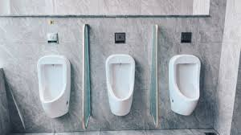
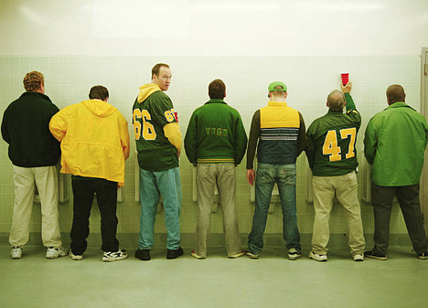
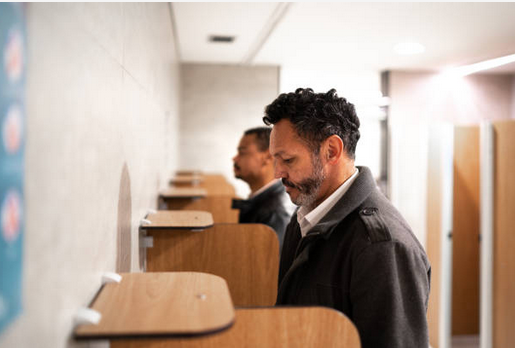
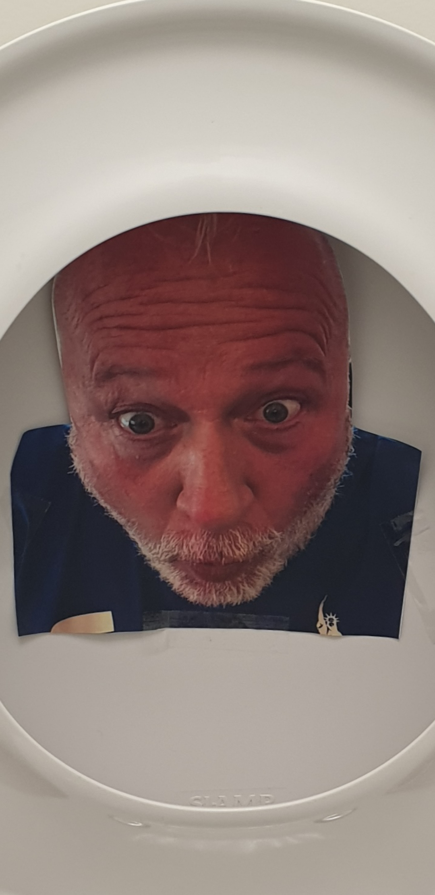

La psychologie visuelle : Comment une simple image peut améliorer l'hygiène dans les toilettes publiques
Oslo, Norvège – Une étude récente révèle comment une photo d'un homme fixant l'utilisateur peut améliorer la propreté dans les toilettes publiques.
Une étude aux résultats surprenants
Tout commence par une constatation simple : malgré les efforts continus pour améliorer la propreté des toilettes publiques, le problème des éclaboussures et des urines à côté des cuvettes persiste. Souvent attribué à une inattention ou un manque de considération, ce problème peut également être influencé par des facteurs psychologiques plus complexes.
Une explication scientifique
La base théorique de cette étude repose sur un phénomène bien documenté en psychologie sociale connu sous le nom d'« effet de présence implicite ». Ce concept stipule que les individus, lorsqu'ils se sentent observés, même de manière implicite ou indirecte, adoptent des comportements plus conformes aux normes sociales attendues.
Un changement simple mais efficace
L'application pratique de cette découverte est simple et peu coûteuse, ce qui en fait une solution attrayante pour de nombreuses institutions. Plusieurs toilettes publiques à Oslo et Bergen ont déjà adopté cette méthode, en installant des images de visages masculins qui regardent directement vers les utilisateurs.
Vers une généralisation de la méthode ?
Face au succès rencontré, cette méthode pourrait bientôt être généralisée à d'autres espaces publics et même à des toilettes privées, notamment dans les entreprises. Les psychologues suggèrent que le choix de l'image pourrait également être adapté en fonction du contexte : des visages féminins pourraient, par exemple, être plus efficaces dans les toilettes pour femmes, ou des regards plus sévères pour des environnements où le respect des règles est particulièrement crucial.
Conclusion
L'initiative norvégienne de placer des photos d'hommes fixant les utilisateurs dans les toilettes publiques s'inscrit dans une tendance plus large d'utilisation de la psychologie pour résoudre des problèmes pratiques du quotidien. Cette approche innovante montre que parfois, des solutions simples peuvent avoir un impact significatif sur le comportement humain.
